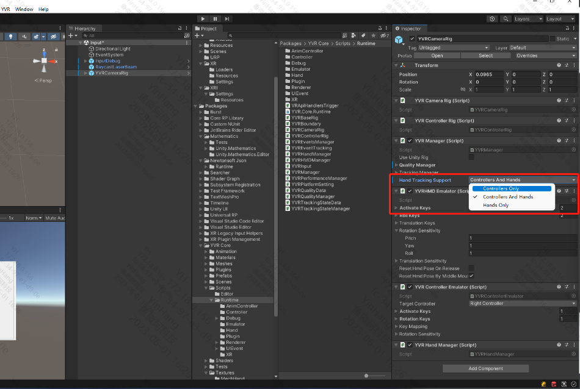

Hand Tracking
Configure Development Environment
Device
- YVR2
Device System Version
- 1.2.2.209 and above
Unity version
- LTS versions
Note
Compatible with Preview Tool 3.1 and above.
Configuration Steps
Turn on the Hand Tracking feature under System Laboratory in your device.
Follow Get Started guide, import YVR package.
In the Unity editor, create a new scene or open an existing scene.
Under
com.yvr.core/Prefabs/, dragYVRCameraRigto theHierarchypanel.Select
YVRCameraRig, fromHand Tracking Support, chooseHandTracking,Controllers And HandsorHands OnlyunderYVRManagercomponent to enable hand tracking or controllers function. Build the scene and run it on the device.
Note
Read code comments for specific APIs.
Retrieve Hand Tracking Data
You can get information about hand tracking, including function enablement status, tracking accuracy, gesture data, and hand interaction status by calling the APIs provided by the SDK.
Function Status
| API | Function Status |
|---|---|
| YVRHandManager.GetHandTrackingEnable | Obtain status of the hand tracking feature. The request will return a boolean value, true means "enabled" and false means "not enabled". |
Tracking Accuracy & Hand Gesture Data
| API | Hand Gesture Data |
|---|---|
| YVRHandManager.leftHandData / YVRHandManager.rightHandData | Obtain hand gesture data, including the number of joints, hand size, joint orientation and position, and the state of hand interaction, including the posture of ray interaction, and whether individual fingers are pinched and the specific pinch strength. |
Hand Interaction Status
| API | Hand Interaction Status |
|---|---|
| YVRHandManger.GetFingerPinchStrength | Obtain the pinch strength of the other fingers against the thumb. |
| YVRHandManager.GetPinch | Whether the finger is pinching. |
| YVRHandManager.GetPinchDown | Whether the pinch is triggered by the finger in the current frame. |
| YVRHandManager.GetPinchUp | Whether the current frame finger triggers unpinch. |
Switching Between Controller Input & Hand Gesture Input
After enabling hand gesture capability on the device,
- The condition for switching to gesture input: the controllers are disconnected or the connected controllers are idled for 5s, enabling hand gesture tracking.
- The condition for switching to controller input: the controllers are turned on or the idled controllers are awaken by pressing the keys.
Switching Process
- Watch
YVRManager.instance.eventsManager.onInputDeviceChangeevent. - Call
YVRPlugin.Instance.GetCurrentInputDevice(ref ActiveInputDevice inputDevice)to check current input device. - Set current input device as UI interactive input,
YVRInputModule.Instance.SetInputDataProvider(DataProviderSource source). - Show and hide the corresponding device object.
Note
The interaction toolkit is recomended to use Samples | XR Interaction Toolkit | 2.3.1